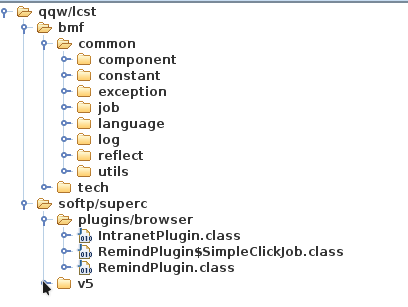

Research Process
While researching a specific vehicle recently, I encountered a Windows application used to connect to a dealer intranet.
After installation, the application directory contained both .jar files and an .exe executable.

Upon executing start.exe, I observed two Java processes launching:

C:\LC\Elsapro\lib\jre\bin\java.exe -agentlib:C:\LC\Elsapro\lib\jna\jvmprotect -Djava.library.path=C:\LC\Elsapro\lib\jna -Dfile.encoding=utf-8 -classpath C:\LC\Elsapro -cp C:\LC\Elsapro\ElsaPro.jar com.qqw.lcst.softp.superc.v5.app.epweb.gui.OptGui
I surmised that the second process was likely an embedded browser to display the UI, while the first process contained the core logic I was interested in.
Opening the main JAR file with jd-gui, I found that many classes displayed an Internal Error, and key classes appeared to be missing. Other Java decompilers yielded similar results.

A quick analysis of start.exe suggested it primarily functioned as a custom ClassLoader, likely handling tasks such as online updates.
From the startup parameters, I noticed the -agentlib flag pointing to jvmprotect. Loading jvmprotect into IDA Pro, I confirmed it functions as a JVMTI agent, leading me to suspect it serves as the decryption module.
JVMTI (Java Virtual Machine Tool Interface) supports a wide range of analytical tools, including those for forensics, debugging, monitoring, thread analysis, and code coverage.
Skimming the JVMTI documentation, I identified three primary export functions that serve as excellent entry points for reverse engineering:
Agent_OnLoad(Called at startup)Agent_OnAttach(Called when attaching to a running VM)Agent_OnUnload(Called when the agent is unloaded)
I loaded the agent into IDA Pro, identifying Agent_OnLoad as the entry point. Analyzing raw JNI and JVMTI code can be cumbersome, so I imported a consolidated jvmti_all.h header file to aid the reversing process (though it helped only marginally here, as the callback logic was straightforward and didn’t utilize complex features).

During startup, the agent calls SetEventCallbacks. Subsequently, as classes are loaded, ClassFileLoadHook events are triggered. Each class file content is passed to the registered callback, which decrypts the bytecode and prints logs.

Instead of reverse-engineering the custom decryption algorithm—which can be time-consuming—I decided to dump the decrypted classes directly from memory using a Java Agent.
After reading Talking about Java Instrumentation and related applications by Yilun Fan, I learned that the Instrumentation API is based on JVMTI, meaning it sits at the same layer and can access the modified (decrypted) classes.

Referring to the article How to get dynamically generated class files in Java runtime?, I packaged a custom agent named ClazzDumpAgent.jar.
The parameters used are:
-d: Specifies the dump output path.-f: Matches the class path prefix to extract.-r: Indicates the specific package name to filter.
Crucial Note: The order of -agentlib and -javaagent is critical. You must allow the native agent to decrypt the classes before the Java agent attempts to dump them.
C:\LC\Elsapro\lib\jre\bin\java.exe -Xms256m -Xmx512m -XX:MetaspaceSize=256m -XX:MaxMetaspaceSize=512m -agentlib:C:\LC\Elsapro\lib\jna\JvmtiCry -Djava.library.path=C:\LC\Elsapro\lib\jna -javaagent:C:\LC\Elsapro\ClazzDumpAgent.jar=-d=C:\LC\Elsapro\clazzDump\;-f=com/qqw/lcst;-r=lcst -Dfile.encoding=utf-8 -classpath C:\LC\Elsapro -cp C:\LC\Elsapro\ElsaPro.jar com.qqw.lcst.softp.superc.v5.app.epweb.gui.OptGui
Upon executing this command, you can see the classes being dumped immediately after they are decrypted by the protection module.

I then packaged the dumped directory into a zip file and opened it with a Java decompiler. In comparison to the initial attempt, the previously null or missing classes were now visible. However, some classes that initially showed Internal Error were still missing. This is because classes are only decrypted when they are loaded/executed.
By proactively traversing the application’s functionality (i.e., clicking through the UI), I triggered the loading of those specific classes, allowing them to be decrypted and captured in real-time.

I recommend using CFR for decompilation as it generally handles modern Java features better and produces fewer errors than older tools.
cfrd -jar ./decypted.zip ./out
Surprise

References
Talking about Java Instrumentation and related applications
How to get dynamically generated class files in Java runtime?
 CC BY-NC-SA 4.0
CC BY-NC-SA 4.0